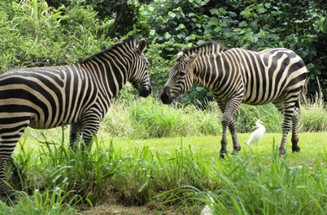
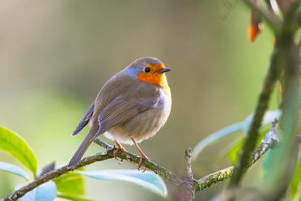

MAMMAS AND NON MAMMAS FARM ANIMALS

A mammal : is an animal with warm blood and fur that gives
birth to live babies and feeds them milk.
Examples include cows, pigs, and sheep.
Characteristics of Mammals as Farm Animals
-
Mammals have a coat of hair covering their bodies.
-
Females Mammals produce milk to feed their young ones.
-
Most give birth to live young, not eggs.
-
Maintain a constant body temperature.
-
Mammals Provide meat, milk, wool, and hides.
-
They are easily tamed and managed.

Non-mammal farm animals : are animals that lay eggs or have scales
instead of fur. Examples include chickens (birds) and fish in farm ponds.
Characteristics of Non-Mammals as Farm Animals
-
Non-mammals reproduce by laying eggs instead of giving live birth. Example :Chickens, ducks, and reptiles.
-
Their bodies are covered with feathers, scales, or smooth skin. Examples: Birds and fish.
-
They cannot control their body temperature, which changes with the environment. Examples : Reptiles and amphibians.
-
Many non-mammals produce a large number of offspring quickly. Examples : Hens and fish.
-
Non-mammals provide valuable products like food, feathers, or materials. Examples : Chickens (eggs), fish (meat), crocodiles (skin).
-
They can adapt to different environments and climates. Examples : Guinea fowls, tilapia, frogs.